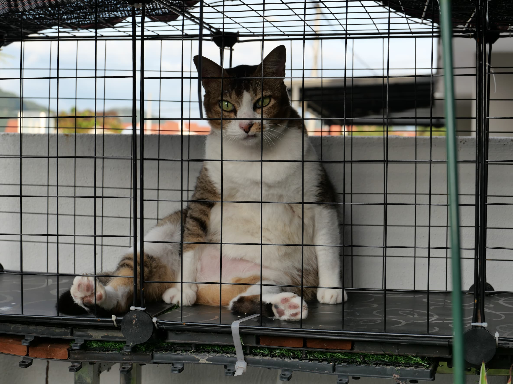
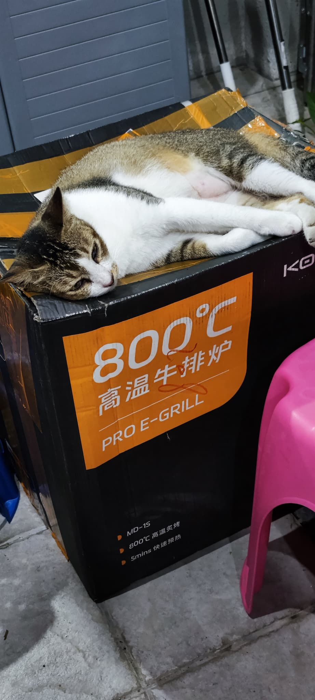
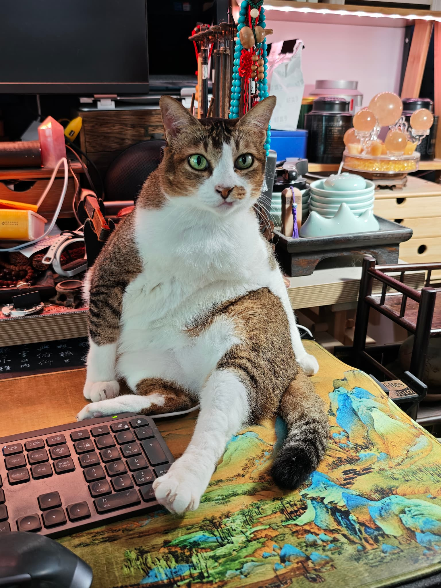

我和太太从来没打算养猫。那时候我们只是偶尔在门外看到流浪猫，顶多给点食物，仅此而已。
但有一只猫，开始每天出现在我们花园里。
不吵闹，不撒娇，只是坐在那里。今天来，明天来，后天还来。就这样，整整两年。
我们开始喂她。从偶尔到每天，从门外到花园，慢慢地，她成了我们生活的一部分。
损之又损，以至於無為」
两年后的某一天，我没忍住——把她带进了屋。
就这样，一只在花园等了两年的流浪猫，正式成为了家里的一员。我们叫她肥猫——因为她爱吃，圆滚滚的，满足感写在脸上。
道家说，无为而无不为。肥猫什么都没做，只是每天出现，然后等待。结果她等到了一个家。这就是她的道。


收养肥猫一段时间后，有一天我在Facebook偶然看到一篇帖子。
是四年前的寻猫帖。照片里的猫，就是肥猫。
我马上联系了发帖的人。对方非常激动——原来肥猫以前是有主人的，失踪了整整四年，主人一直在找她。
他们全家人来了，看到肥猫，泪流满面。
「她认出我们了，但她没有要跟我们走的意思。」
前主人看着肥猫，沉默了很久，最后说：她在这里比较好，你们照顾她吧。
然后，他们离开了。
肥猫失踪了四年，流浪了四年，在我们花园等了两年。
她认得前主人，但她选择留下。
也许对她来说，家不是出发的地方，而是心安的地方。她用四年的时间，找到了那个地方。

肥猫现在十岁了。是家里年纪最大的猫，也是最淡定的一只。
她不争，不抢，不吵。吃饱了就睡，睡醒了就吃。偶尔坐在书法卷轴前，像个参透世事的禅师，什么都看在眼里，什么都不说。
庄子说，至人无己。肥猫就是这样——她不需要证明自己是谁，只是好好地活着，把每一天过得圆满。
这就是无为的境界。